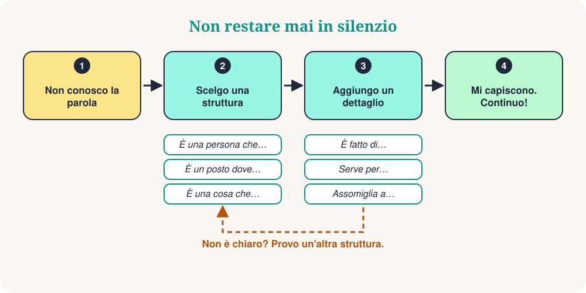

Sei al mercato. Vuoi chiedere un caricabatterie, ma la parola è sparita. Il tuo cervello dice: traduci! Esiste un modo migliore. Non cercare la parola che manca. Descrivila.
È una vera abilità, e anche gli italiani la usano. Con 10 strutture di frase puoi descrivere una persona, un luogo, un oggetto o un momento. Spesso l'altra persona ti dà la parola. Poi continui a parlare.

Le 10 strutture di frase
Impara la struttura, non la parola. Leggi l'esempio ad alta voce, poi prova la stessa struttura con una parola nuova.
| # | Struttura | Esempio | Serve a descrivere |
|---|---|---|---|
| 1 | È una persona che… | È una persona che insegna ai bambini. | una persona (un insegnante) |
| 2 | È un posto dove… | È un posto dove si compra da mangiare. | un luogo (un mercato) |
| 3 | È una cosa che… | È una cosa che dice l'ora. | un oggetto (un orologio) |
| 4 | È una cosa che si usa per… | È una cosa che si usa per scrivere. | uno strumento (una penna) |
| 5 | È un momento in cui… | È un momento in cui si dorme. | un momento (la notte) |
| 6 | È un giorno in cui… | È un giorno in cui si fa festa. | un giorno speciale (una festa) |
| 7 | Per esempio… | Mi piace lo sport. Per esempio, il calcio e il tennis. | un'idea: fare esempi |
| 8 | Vuol dire… | «Enorme» vuol dire molto grande. | una parola: usare parole semplici |
| 9 | Assomiglia a… | Assomiglia a un piccolo computer. | l'aspetto: fare un paragone |
| 10 | Come si dice… in italiano? | Come si dice questo in italiano? | qualsiasi parola: chiedere aiuto |
Nella vita reale
Il cameriere sorride e ti porta una penna.
Context: In un bar, vuoi firmare il conto.
La persona risponde: «Il mercato? È a due strade da qui.»
Context: In una città nuova, cerchi il mercato.
Il tuo amico ride: «Una banana!»
Context: A una festa, hai dimenticato la parola.
10 espressioni di sopravvivenza
Sono piccole aggiunte. Mettile dopo una struttura per dare più dettagli.
| # | Espressione | Esempio |
|---|---|---|
| 1 | È un tipo di… | È un tipo di animale. |
| 2 | È fatto di… | È fatto di legno o di metallo. |
| 3 | Serve per… | Serve per viaggiare. |
| 4 | È il contrario di… | È il contrario di «caro». |
| 5 | Suona come… | Suona come musica. |
| 6 | Ha… | Ha quattro ruote. |
| 7 | È simile a… | È simile a una macchina. |
| 8 | Viene da… | Viene dalla Francia. |
| 9 | Non conosco la parola, ma… | Non conosco la parola, ma serve per cucinare. |
| 10 | Puoi ripetere, per favore? | Scusa, puoi ripetere più lentamente? |
Il metodo in 3 passi
Descriviamo un ombrello senza dire la parola:
- Categoria: È una cosa che ti protegge.
- Funzione: Si usa quando piove.
- Dettaglio: Assomiglia a un piccolo tetto.
Tre frasi brevi. L'altra persona dice «Un ombrello!» e la conversazione continua.
Evita queste 4 trappole
Quiz veloce
❓ Dimentichi la parola «panetteria». Quale frase funziona meglio?
«È un posto dove…» è la struttura perfetta per i luoghi. Chi ascolta sente «pane» e «posto»: una panetteria!
❓ Quale frase descrive le «forbici»?
Le forbici sono uno strumento: usa «È una cosa che si usa per…».
❓ Un amico dice: «È il contrario di caro.» Qual è la parola?
Il contrario di caro è economico. Un ottimo modo per spiegare gli aggettivi!
Il tuo allenamento di 5 minuti
- Guardati intorno e scegli 5 oggetti.
- Descrivi ognuno con una struttura, senza dire il nome.
- Aggiungi un'espressione di sopravvivenza ai due più difficili.
- Registrati con il telefono e ascolta la tua voce.
- Domani ripeti con 5 oggetti nuovi.
In sintesi
Essere fluenti non vuol dire conoscere tutte le parole. Vuol dire non restare mai in silenzio. Impara le strutture, aggiungi un dettaglio e continua a parlare.
“Descrivilo. Non tradurlo.”